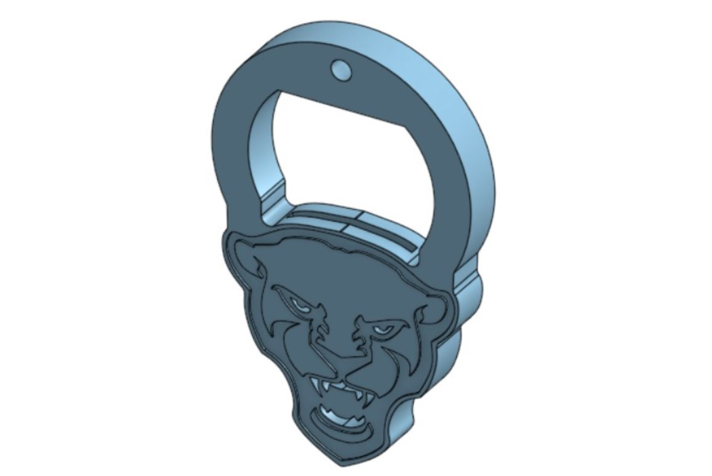
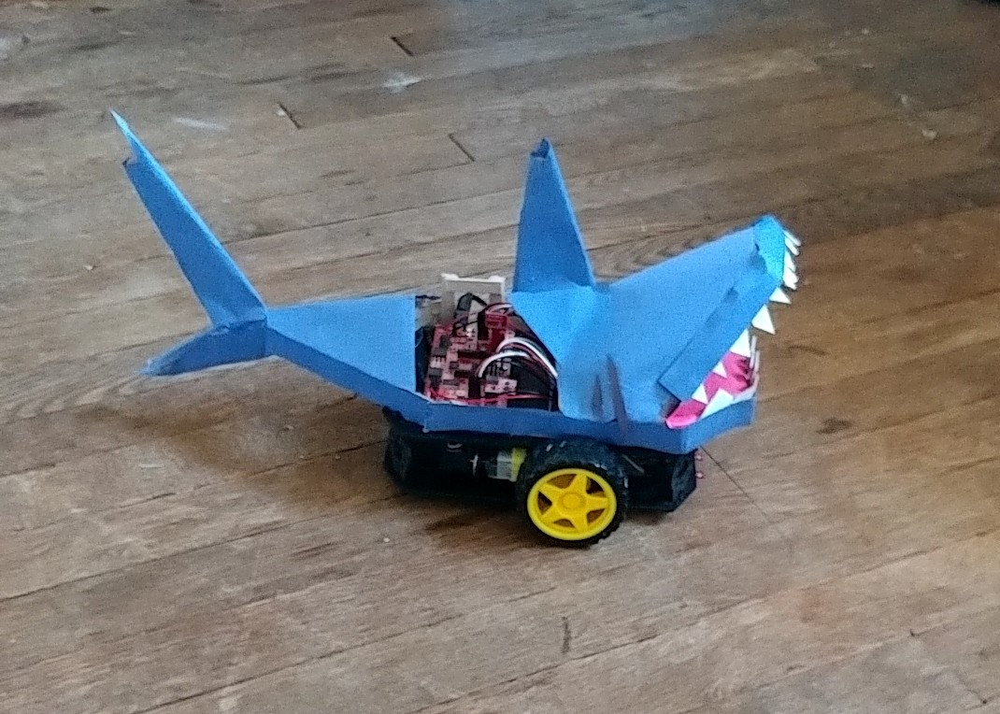
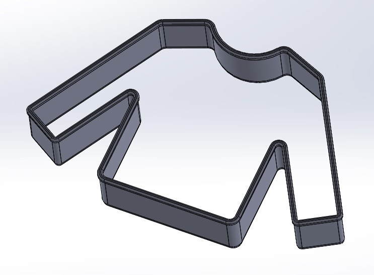

Miscellaneous Projects - A Sample
Panther Bottle opener
A Pitt-themed 3D printable bottle opener designed in Onshape. Tested and functional, it requires only a penny and a soda.
Morton Salt Flask
As the finishing touch to a Morton Salt Girl Halloween costume, this Morton Salt container holds a water bottle with a straw that leads to the salt spout. The straw is cut and glued such that, in order to drink, the liquid needs to be poured into the user’s mouth from the spout.
Redbot Shark Topper
A nautical disguise for a RedBot during the robot programming portion of a class project, made exclusively out of popsicle sticks, construction paper, hot glue, and enthusiasm.
Nixie Clocks
An electrical project mostly conceived by my brother, we are in the process of constructing two clocks using Nixie tubes and 555 timers, as well as custom PCBs.
3D printed Sweater Cookie Cutter
Filling the gap in my mom’s Christmas cookie cutter repertoire.